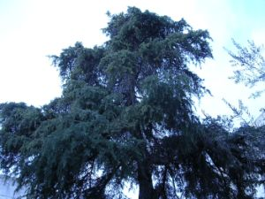
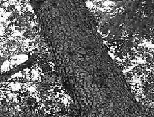
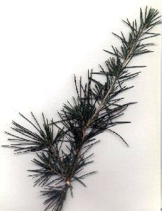

|
Cedrus
deodara ( Roxb. ex
Lambert ) G.Don in Loud., Hort. Brit. ed. 1, 388, No. 23637
(1830)
|
Pináceas |
| Cedro del Himalaya | Árbol aciculifolio |
|
Árbol de gran talla, el ejemplar del patio sur de la Escuela de Ingeniería Informática mide 12 metros, pero pueden alcanzar hasta 70 m de altura (1); porte piramidal; corteza gris oscura, resquebrajada en escamas irregulares; ramas más o menos colgantes. Hojas aciculares, de 5 cm o más, dispuestas formando penachos sobre ramitas cortas (braquiblastos), de color verde plateado. Piñas masculinas de 3-6 cm, cilíndricas, amarillentas o verdosas. Piñas femeninas de 7-12 cm, ovoides, erectas, con ápice redondeado. Se abren en otoño (2). |
  Fotos: Pablo Soler Fernández-Gao |
|  |
Observaciones:
Se afirma que la carpintería del famoso templo de Éfeso, así como la estatua de Artemisa que se adoraban en él, era de madera de Cedro. De su madera se extrae una esencia empleada en perfumería y que tiene propiedades antisépticas (3). |
| Área de origen.- Originario de Afganistán y del noroeste de la Cordillera del Himalaya. | |
| Uso en el campus: 1 ejemplar |
Localización: E.T.S. Ingeniería
Informática: |
| (1) www.infojardin.com , (2) www.arbolesornamentales.com , (3) G. López González, Los árboles y arbustos de la Península Ibérica e Islas Baleares. | |
| Pablo Soler Fernández-Gao (2005) & Carlos Romero Zarco (2002-2006) | |